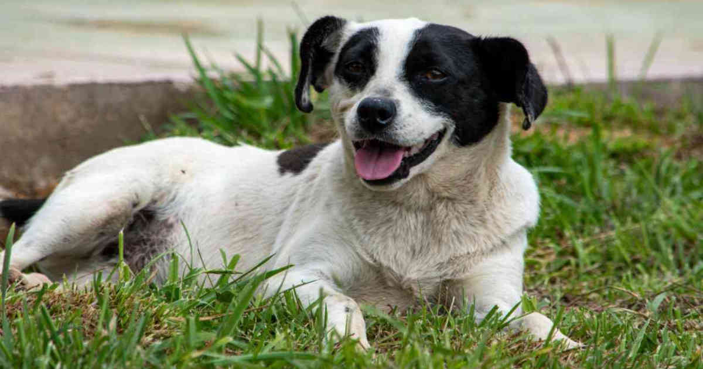
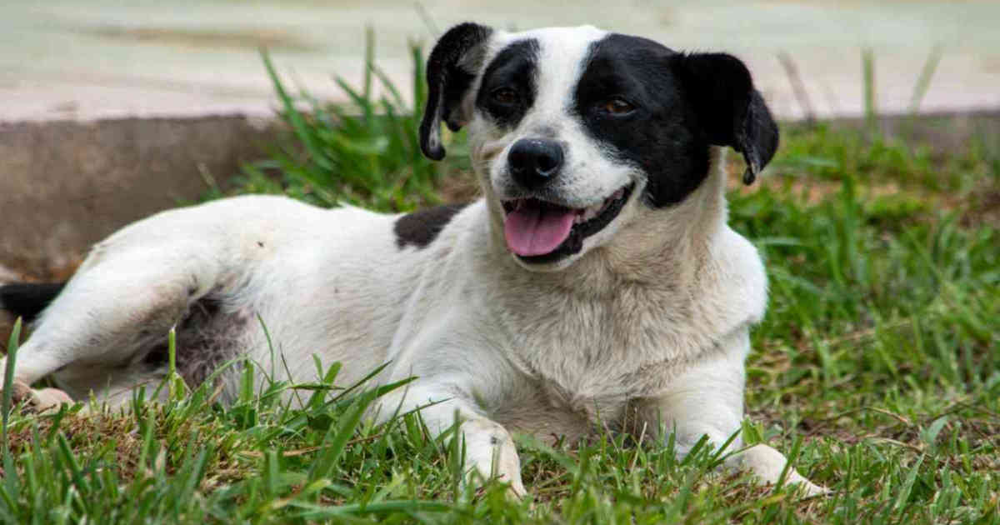
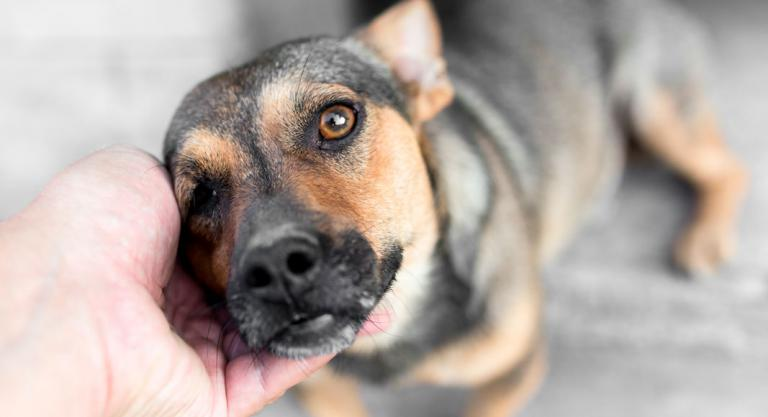
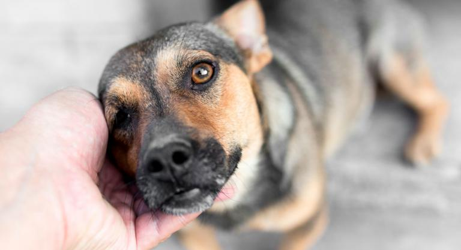

Animalitos que buscan hogar
Tener una mascota en casa es una gran responsabilidad
pues se convierte automáticamente en un miembro más de
la familia al que debemos cuidar todas sus necesidades
básicas de alimentación, techo y salud.
Cambia la vida de alguno de estos animalitos y adoptalo.
 


 

Ventajas de adoptar
- En primer lugar y las más importante, la oportunidad de cambiar no solo una, sino la vida de dos perros, el que decides adoptar y el callejero que va a ocupar el puesto que deja el perro que tú te llevas.
- El factor económico es otro punto a favor pues los costos de adoptar son mucho menores comparándolos con los de comprar un cachorro; incluso hay centros de zoonosis donde los perros se entregan gratis, con su cuadro de vacunas y esterilizados, lo que reduce significativamente los costos.
- No colaboras con el negocio de la cría de cachorros, donde los criaderos manejan a estos animales como objetos que producen en serie manteniendo a los animales reproductores en condiciones muy desfavorables.
- Estos animales suelen ser muy agradecidos y nobles por haber sido rescatados y reintegrados a una nueva familia, así que encontrarás un amigo fiel y muy cariñoso cada vez que entres por la puerta.